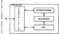
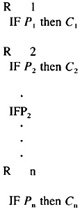
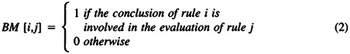
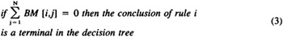

by Abraham Kandel
CRC Press, CRC Press LLC
ISBN: 084934297x Pub Date: 11/01/91
|
|
Fuzzy Expert Systems
by Abraham Kandel CRC Press, CRC Press LLC ISBN: 084934297x Pub Date: 11/01/91 |
| Previous | Table of Contents | Next |
This section describes the internal structure of the CONTROLLER. The expert system employs three distinct knowledge bases and is divided into four main logical parts,8-27 as shown in Figure 9:
The blackboard is a global data structure (i.e., the contents of the blackboard is reachable from any part of the software) that stores intermediate results from the inference procedure and contains important information about the data. Before we describe the components of the blackboard, it is important to understand conceptually its function. Suppose we have a knowledge base containing two rules:
if a then b
if b then c
and suppose that the user provides the system with the data a. First, since the user provides the data a, we put it on the blackboard. The blackboard now contains the truth sentence a. The inference engine starts to evaluate the knowledge base by matching the premise of each rule to the data placed on the blackboard. Since the premise of the first rule is matched against the data on the blackboard, the conclusion of that rule becomes true and is placed on the blackboard. Thus, the blackboard now will contain the data a and b. The inference engine matches the premise of the second rule against the blackboard (since the premise of the second rule is b and the blackboard contains b) so that the conclusion of the second rule, c, becomes true and is placed on the blackboard.

Figure 9 The general structure of the CONTROLLER expert system.
The blackboard plays a very important role in the inference process, since without storing the intermediate results on the blackboard the inference engine would not be able to perform its task. Each line on the blackboard contains:
The expert system described here uses production rules as a knowledge representation method.
The general structure of a production rule is
where P is the premise of the rule and C is the conclusion. The general structure of P is (using the BNF notation):
P :: = S |(P) |NOT P |S OR P |S AND P |
S :: = An English phrase in the form: the A of [the] B is [not] [adjective] C. Where A, B, and C are key words. An example to S can be “the range of VHF is 25 miles”. In this case A = “range”, B = “VHF”, and C = “25”.
The general structure of the knowledge base is

For example, some of the rules in KB1 are
The knowledge base is associated with a special matrix called the bit matrix (BM). BM is an N by N matrix where N represents the number of rules in the knowledge base, so that:

and

The bit matrix has three functions:
The bit matrix is created during the initial start-up procedure and updated when a new rule is inserted into the knowledge base or a rule is deleted from the knowledge base. As shown in Equation (2), an entry BM[i,j] accepts the value 1 if the conclusion of rule i can contribute to the firing of rule j and 0 otherwise. In other words, if the conclusion of rule i is similar to a clause in rule j then 1 is inserted in BM[i,j]. Thus, a matching process takes place to determine the similarity between the conclusion of rule i and a clause in rule j. As was stated earlier, each clause in a production rule is in the form:
THE A of [the] B is [not] [adjective] C
where A and B are key words and C is either a key word or a number or a range of numbers describing B.
| Previous | Table of Contents | Next |
){kind=link}